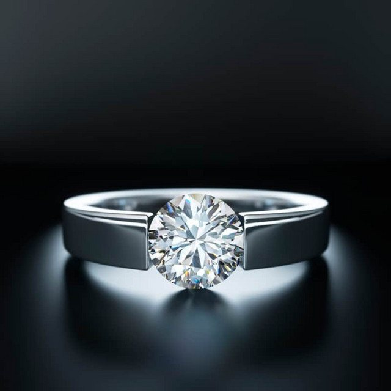

The Eclectic Polymath Podcast · Archive
#191 Diamonds: Love, Scarcity, and the Most Engineered Symbol in Romance

About this episode
A diamond is carbon arranged in an extraordinary way. So how did a tiny crystal formed deep beneath the Earth become one of the most recognizable and expensive symbols of love in the world?
This episode follows the diamond from mine to engagement ring: how natural diamonds form, how rough stones are cut and graded, what the 4Cs actually tell you, why cut often matters more than the specifications people obsess over, and how natural, lab-grown, moissanite, and other alternatives really differ. We also get into the modern buying game—magic carat thresholds, grading reports, jewelry markups, insurance, resale, and why a ring's appraisal value can be very different from what anyone would actually pay you for it.
Key points
- how natural diamonds form, how rough stones are cut and graded, what the 4Cs actually tell you, why cut often matters more than the specifications people obsess over, and how natural, lab-grown, moissanite, and other alternatives really differ.
- Then there's the bigger story: De Beers didn't invent engagement rings or romantic love, but it helped industrialize the connection between diamonds and both.
- "A Diamond Is Forever" turned permanence into marketing, celebrity culture made bigger stones legible as status, and generations of couples eventually transformed that commercial script into a genuine tradition.
More like this
 #218 Nicole Avant: Power, Marriage, and the Family WayOctober 17, 202650:31#192 Marriage: The Business Behind "I Do"October 6, 202655:14#134 The Silent Twins: Language, Trauma, and the World They Built TogetherAugust 18, 202643:01
#218 Nicole Avant: Power, Marriage, and the Family WayOctober 17, 202650:31#192 Marriage: The Business Behind "I Do"October 6, 202655:14#134 The Silent Twins: Language, Trauma, and the World They Built TogetherAugust 18, 202643:01 #103 Olivia Wilde, Jason Sudeikis, and the Anatomy of a Public BreakupAugust 3, 202631:20
#103 Olivia Wilde, Jason Sudeikis, and the Anatomy of a Public BreakupAugust 3, 202631:20